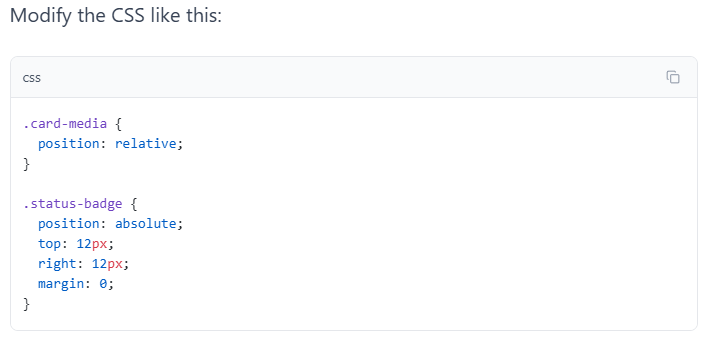

New
Build responsive interfaces
Learn how layout, spacing, media, and component rules work together in real pages.
Position the badge inside the card image:
Modify the CSS like this:

Now the badge should sit correctly over the image.
position: relative does not move .card-media by itself. The card is still where it was, but it can now act as the reference box for absolute children.
position: absolute removes .status-badge from normal flow. The badge no longer takes up a row below the image; it is placed 12px from the top and 12px from the right of .card-media.
In CSS, a positioned element is any element whose position value is not static, which is the default.